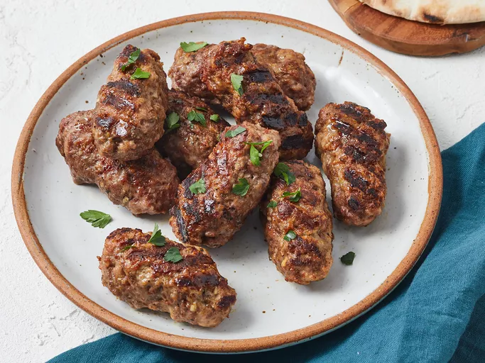

Serbian Ćevapčići

Description
Ćevapčići is a tasty homemade grilled sausage. This tasty Serbian-style version uses ground pork, beef, and lamb. Great served in a sandwich!
Ingredients
- 1 ½ pounds ground pork
- 1 pound lean ground beef
- ½ pound ground lamb
- 1 egg white
- 4 cloves garlic, minced
- 2 teaspoons ground black pepper
- 1 teaspoon salt
- 1 teaspoon baking soda
- 1 teaspoon cayenne pepper
- ½ teaspoon paprika
Steps
- Gather all ingredients.
- Preheat an outdoor grill for medium heat and lightly oil the grate.
- Combine ground pork, ground beef, ground lamb, and egg white in a large bowl.
- Add garlic, black pepper, salt, baking soda, cayenne pepper, and paprika. Mix well using your hands; form into finger-length sausages about 3/4-inch thick.
- Cook sausages on the preheated grill, turning occasionally, until no longer pink in the center, about 30 minutes. An instant-read thermometer inserted into the center should read 160 degrees F (70 degrees C).